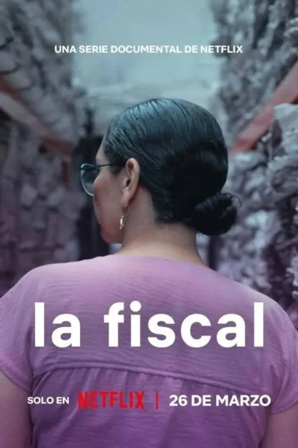
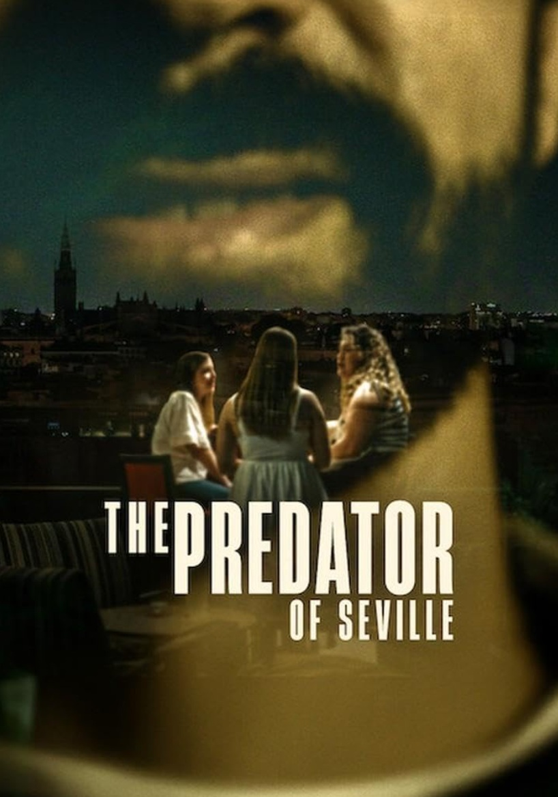
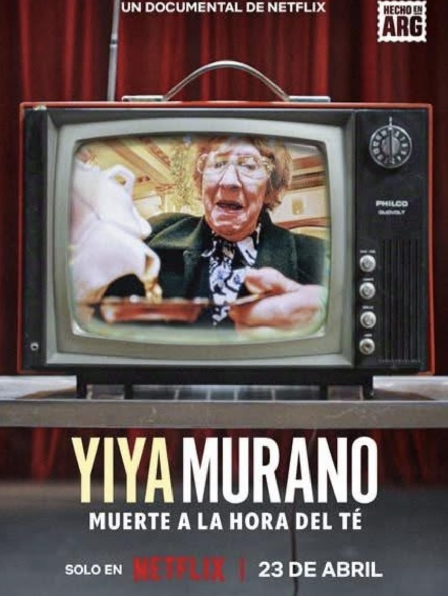
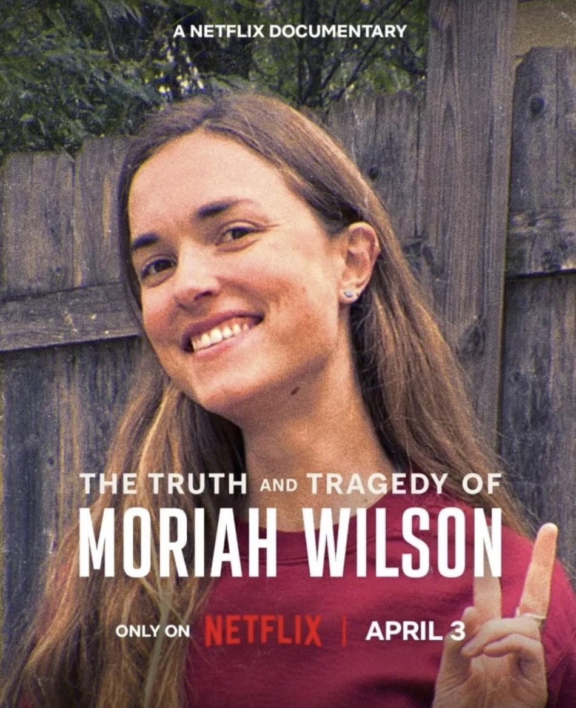
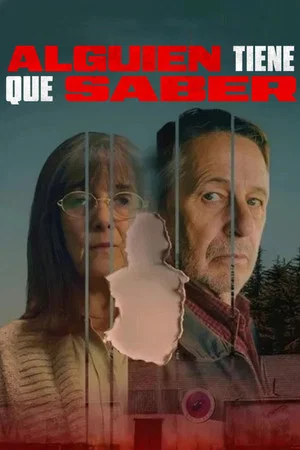
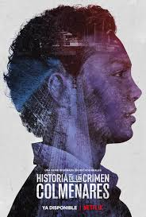

LA FISCAL
Esta serie documental sigue a la primera Fiscal de Feminicidios de la Ciudad de México, una oficina creada para investigar y erradicar la violencia contra las mujeres.
- Género: Crimen, Documental
- Año: 2026
- Duración: 1 TEMPORADA
- Director: Paula Mónaco, Felipe Miguel Tovar
- Productores/as: Juan Farré, Paula Mónaco Felipe
- Calificación general: 4.6/10
- Clasificación por edad: +18
- Plataformas: Netflix
Tráiler
REPARTO

SAKURY HERRERA
ERNESTINA GODOY RAMOS

BRENDA CELINA BAZÁN VARELA
HÉCTOR MIGUEL ORTIZ ACOSTA

LUCÍA HERRERA
RESEÑAS DESTACADAS
Calificación: 9.0/10

capataz-sa dice:
Un documental precioso sobre la complicada vida de un fiscal mexicano
“Un documental excelente que muestra la lucha contra el feminicidio en México. Sayuri, la fiscal protagonista, destaca por su compromiso, humanidad y cercanía con las víctimas. Una obra impactante que invita a reflexionar sobre los derechos de las mujeres y la realidad del sistema judicial mexicano.”
Calificación: 10/10
Christopherwhitty-30355 dice:
Excelente
"Excelente serie de documentales sobre la terrible cantidad de víctimas de feminicidio y los problemas que enfrentan las familias y las autoridades para encontrar justicia debido a la corrupción o la falta de voluntad. Las mujeres en este escenario muestran fortaleza de carácter y aportan esperanza ante un contexto de corrupción institucionalizada y misoginia horribles."
Calificación: 5.0/10
Roki24 dice:
Genial
"Muy buen documental que habla sobre víctimas de feminicidio."
Calificación: 4.0 / 10
Derk12 dice:
Bien
"Genial documental que trata sobre hechos reales."
Calificación: 4.0 / 10
Ulis_9 dice:
Bien
"Buena serie documental sobre el femicidio y la justicia"
RELACIONADOS

THE PREDATOR OF SEVILLE
Calificación: 6.5/10
DURACION: 1 TEMPORADA

YIYA MURANO: MUERTE A LA HORA DEL TÉ
Calificación: 5.9/10
DURACION: 1 TEMPORADA

THE TRUTH AND TRAGEDY OF MORIAH WILSON
Calificación: 6.6/10
DURACION: 1 TEMPORADA

ALGUIEN TIENE QUE SABER
Calificación: 5.5/10
DURACION: 1 TEMPORADA
